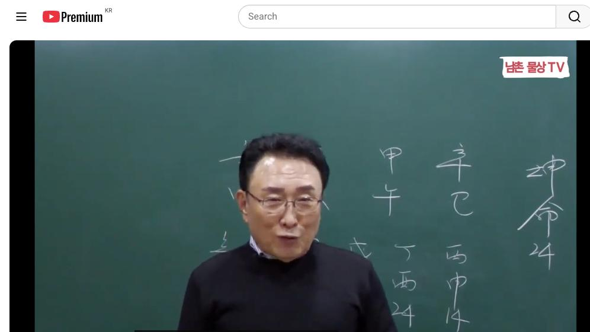
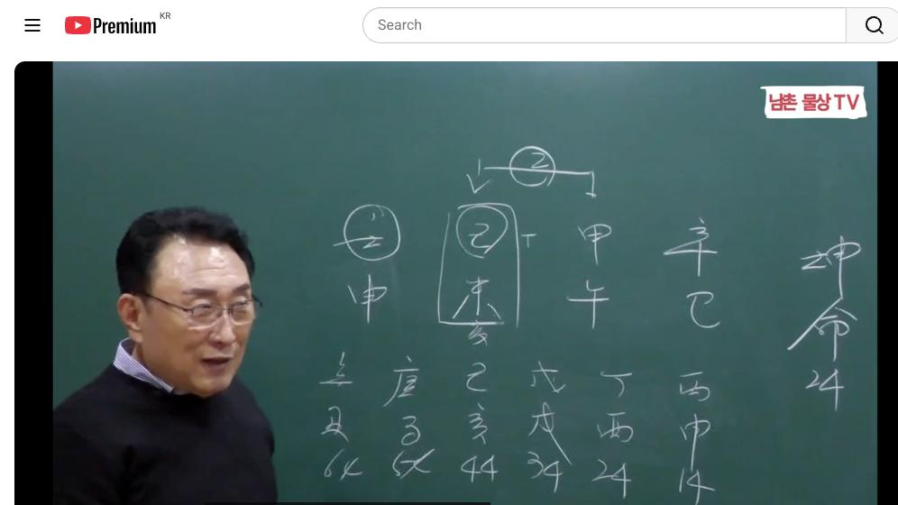
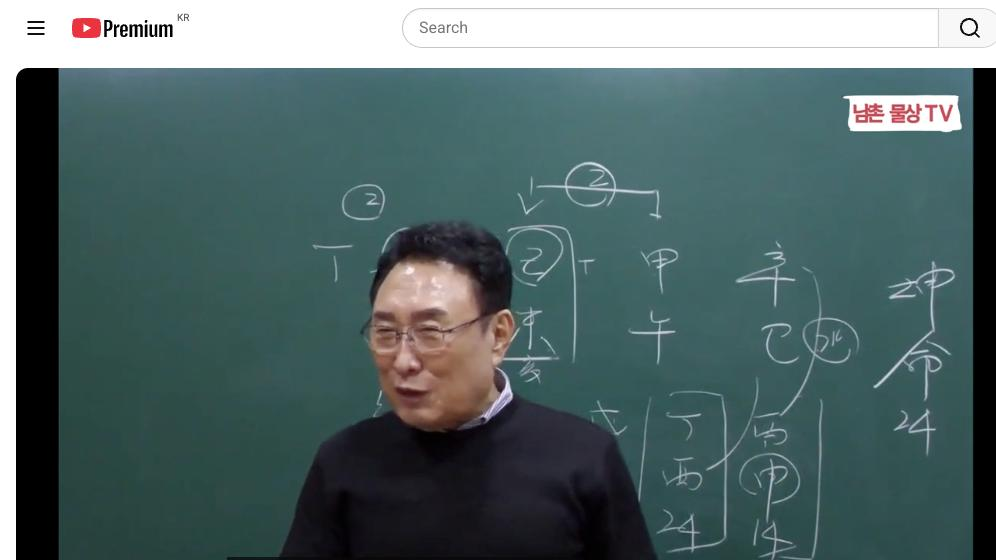
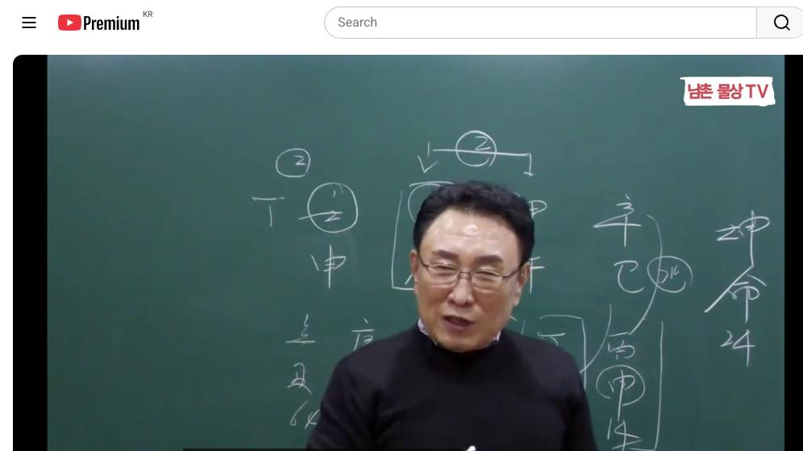

남촌물상TV 전체 문서 › 동영상 V0057
[실전사례]25 기토 일간 여자가 남편을 말 잘 듣게 만드는 방법은? 상담문의 : 010-3139-6645

| 문서 번호 | V0057 (동영상) |
|---|---|
| 영상 URL | https://www.youtube.com/watch?v=QRMf5Ie1pOs |
| 영상 ID | QRMf5Ie1pOs |
| 게시일 | 2024-03-14 |
| 길이 | 15:53 (953초) |
| 조회수 | 1,723회 (수집 시점 기준) |
| 카테고리 | Howto & Style |
| 자막 | ko (자동생성) |
| 수집 시각 | 2026-08-30 17:03 (KST) |
영상 설명 (YouTube 설명 원문 그대로)
기토 일간 여자가 남편을 말 잘 듣게 만드는 방법은? #실전사례 #기토일간 #남편
전체 자막 (329구간 · 타임스탬프 클릭 시 해당 장면으로 이동)
[0:01][음악]
[0:04]신사 갑보 을미 임신 자이 사주를
[0:08]어떻게 풀 것인가 지금 제가 앞으로
[0:11]이제 하고 싶은 것은 어 방송실 제가
[0:14]아직까지 못 해서 그러지 이제 제가
[0:16]사무실을 이제 이전해서 옮기게 되면
[0:19]이제 나이브로 방송을 직접 할 거예요
[0:22]그래서 이제 유튜브에 나이브로 직접
[0:24]사주를 가지고 직접 풀어드릴 겁니다
[0:25]그래 이제 그런 강의를 앞으로 할게
[0:27]될 건데에 이렇게 즉석 하는게 좋죠
[0:31]어 아마 아 우리 구독자분들도 직접
[0:34]풀르면 더
[0:37]좋아하지 그 그럼 싸게 보는 거지
[0:40]우리 비싼
[0:43]사주인데 자 여기 이제 김일주 토일주
[0:50]기토일주 자
[0:52]기토일주 그 지금 저 물도 있고 목도
[0:58]있고 식 다 있어요 그
[1:01]기토의 재물은 어디 있어요
[1:04]제 자 여기
[1:06]있죠 자기가 감당할 재물이 아니야
[1:09]안돼요 자 기토는 임수를 막을 수가
[1:12]없죠 그래서 감당이 안 된 재물을
[1:15]가지고 있다 자 그러면 지금 여기하고
[1:20]갑목을 해서 합을 하고 있는 사주에
[1:22]갑을 하고 있어요 이제 갑이 합의라는
[1:25]것은 영원할 수가 없는 거예요
[1:27]언젠가는 풀어져요 어 그러면 탁수의
[1:31]개성을 가지고 있는 사주다 그럼
[1:33]만약에 풀어지게 된다면 저 기토이이
[1:37]사람은 항시 불안한 마음을 가질
[1:39]수밖에 없다 뭔가 초조하고 불안해요
[1:43]자 그런
[1:44]다음에 기토일 주가이 지지로 가져오는
[1:48]물은 어디서 가져올 것인가 해수에
[1:51]가져 여기서 좋죠 해묘 해수 가져올
[1:55]거고 또 물은 없죠 자 그러면 이람
[2:00]잘할 수 있는 것은 묘이 해서
[2:03]결과적으로 뭐야 나무를 심으면 되겠네
[2:07]아니에요네 그러니까 지금 잘 보시면
[2:10]저 기도에서 갑목이 풀어지게 된다면
[2:14]탁수가 될 건 무너질 건데 내가 하는
[2:17]행위가 아까 헤이 하게 되면 안
[2:20]무너지겠다 그 소리
[2:21]아니에요 그러면 자기가 교육에 가는
[2:26]관계성이 있든지 이런 쪽에 한게 좋죠
[2:28]그러면 자 여기 보시면 일단 사주 자
[2:32]각기 하은 을목이 여기서
[2:35]을목이 자
[2:37]을목이 자 을목이
[2:40]을목이 작은 땅에 작은 나무가 된
[2:43]거예요 그럼 자 나의 관과
[2:46]합에서 을목이 돼서 기토 심어지면
[2:50]남진의 노래 저푸른 초는게 그림 같은
[2:53]지을 진게 된 거지 그게 노래를 하면
[2:56]쉽게 안 하들 우리 한국 사람들은 왜
[2:58]자꾸 불러본 노래라서
[3:01]봐봐요 자기의 작은
[3:05]땅에 갑목과 합을 해 을목이 되니 그
[3:09]남자를 만나서 살게 되니 을목이
[3:13]심어지는 저푸른 초원위에 물위에
[3:16]가지고 집을 짓고 사는 사주다 이렇게
[3:19]좋게 얘기하면 이렇게 한다이 말이야
[3:21]근데 너하고
[3:24]풀어지면 이혼을 하면 저푸른 동이다
[3:28]내 낭지 위 는 게이래 이제 이렇게
[3:31]해보도 되지 물 파도에 휩쓸리는
[3:33]사지가 된 거지 자 그래서이 사람은
[3:36]이혼하면 돼 안 돼 안돼 안 된다
[3:38]그러 안 되게 하려면 어떻게 할
[3:40]것이냐 그 말이야 안 되게 하려면
[3:43]교 그렇지 교육의 해묘미 하게 되
[3:46]목에 뿌리가 되면 안 도망간다 이제
[3:49]이렇게 쉽게 알 수가
[3:51]있죠 그렇지 뿌리가 되면 안 도망갈
[3:54]거 아니에요 남자가 안 도망가지
[3:56]뿌리가 있는데 디 어디로 도망가 자
[3:58]안 도망가 자 그러면 이 남자도 말을
[4:01]잘 들어 안 들어 잘
[4:03]듣지 자기가 기토의 땅에 살려는데
[4:07]내가 합에서 을목을 만들어 놨으니
[4:09]뿌리는 내가 딱 지키고 앉아
[4:11]있으니 남자가 말 잘든 남편이
[4:16]되지 그러 남편들이 대부분이 말 안
[4:19]듣는 사람 많잖아요 저 같은
[4:24]사람 그래서 우리 그분께서는
[4:27]항시 뭐 좀 해보시고 특히 뭐냐
[4:31]70년이 안 된게 지금
[4:34]되겠냐 앞으로 30년이라도 편하게
[4:37]살자이 이게 이게 지금 제의 답이에요
[4:40]어 근데 그런 사람은 안 되지 나가고
[4:43]틀리지이 사람은 말을 잘 듣는 남편이
[4:45]되는 거예요 그래서 우리들이 이제에
[4:48]이런 이런 그 여자분들은 남편이 말을
[4:52]잘 듣는 남편하고 살 수 있다 뭐를
[4:54]하면 해묘 미를 하면 답이 사주 다
[4:58]본 겁니다 이렇게 되면 간단하게
[5:01]그래서 이제 그 행위를 하셔야 됩니다
[5:03]질로게 보시면 돼요 예 자 그러면
[5:06]이제에이 사람이 지금 현재 정의되 와
[5:09]있잖아요 자 정의되 있어요 자 여기서
[5:13]이제
[5:15]핵수저 한목 할 거
[5:17]아닙니까이 정림 한목요 목이 각게
[5:21]풀어질 수 있죠 그러면 만약에 20체
[5:26]전에 사귄 남자가 있다면해진 확률이
[5:29]크다
[5:30]떨어질 것이다 왜 여기에 있는 저 저
[5:34]밑에 연하의 남자가 굉장히 이쁘게
[5:37]보여 그러니 기존에 남자 각기 하버는
[5:40]건 너한테 구속 받느니 차라리 너를
[5:42]놔주고 내가 여기에 작은 을목을
[5:45]심은게 나한테 좋겠네 이렇게 보는
[5:48]거죠 간단하죠 어 그러니까 이거
[5:52]보고도 자 어느 때 너 오 지금 사귀
[5:55]있는 남자 있지이 다음에도 한번 해
[5:56]줄 수 있어 던지면 되는
[5:59]거야 어느 때 짚으면 되고 뭐 어려운
[6:03]거 아니잖아요 볼때 그 상담하는
[6:05]기법이이 사람 사주 특징이 그래요
[6:08]그러니까 잘못하면 헤어질 수가 있는
[6:10]사주가 돼 그러면 자
[6:13]여기에서 24세 기준에 만난 사람은
[6:17]누구냐 또 23세 이전에 만난 남자는
[6:20]어떤 남자냐 한번
[6:22]해볼까요 자
[6:24]24세에 이전에 맞는
[6:27]남자는 병화 이지금 대운
[6:31]자 합을 해서 이렇게 합을 해서
[6:37]뭐가 수가 됐죠 수가 있잖아요 그러면
[6:41]때 만나는 남자는 쉽게해서 돈이 좀
[6:45]있는 애들이야 그게 돈을 잘 써 준
[6:47]애들이지 그러니까 커피값을 안 내도
[6:50]남자가 잘 내 주지 이렇게 해도 된다
[6:52]말이야 그러니까 어느 때는 이제
[6:54]연도를 짚으면 되는 거예요
[6:56]간단하게 그래서 그대신
[7:00]여기 오면 마음이 바꿔진다 그 말이야
[7:03]정류 오면 마음이 바뀌죠 그럼요
[7:05]남자는 어떤 것이냐 여기에서 만나는
[7:08]남자는 인신 사의
[7:11]남자예요 언제든지 떠나갈 수 있는
[7:13]조건이 돼 있는 사람이고 여기에
[7:15]만나는 것은 사유축이야 사유축 사유축
[7:19]그렇죠 사축이 된단 말이에요 그러면
[7:22]자 여기에서 만나는 정림 한목에
[7:25]을목의 남자는 아까 그래도 짠돌
[7:29]아니야 야 그래도 괜찮아 하고 마음이
[7:31]좀 더해 근데
[7:35]문제는 자음의 형태를 취할 수가
[7:37]있다는
[7:38]것이지 그러니까 항시 장미에는 뭐가
[7:41]있어요 가시가 있다이 상담하면서
[7:44]그렇게 하셔야 여러분들이 장면에는
[7:46]가시가 있지 네가 마음에 좋지만 그
[7:49]속에 가르치 있다는 걸 염두해 둬야
[7:51]돼 기법을 쓰면 되지 재밌게 상담도
[7:55]재밌어야 됩니다 딱딱하게 야야 야
[7:57]재미없어 그냥 재밌게
[8:00]가시도 장미를 다루는 방법 또 한번
[8:02]탁 던져보지 이제 가시 도친 장미를
[8:05]어떻게 다룰
[8:09]것이냐 어 어떻게어떻게 어떻게 하라고
[8:13]물을 앉으면
[8:15]돼 돈 돈만 안주면 돼 말 시들 건데
[8:20]가물이 싸는 가시라도 물을 안으면
[8:23]가시도
[8:24]시들어
[8:25]그 배웠으면 써먹을 줄 알지
[8:28]여러분들이 일주에 여자가 남자한테
[8:32]돈을 잘 주면 어쩐다고 남자 떠난다
[8:35]그렇지 남의 집에 내 황시 얘기하니까
[8:38]그이지 말라고 그래서 가시 답신
[8:40]장미도 잡는 방법이 있지 딱 하 하면
[8:43]된단 말이에요
[8:44]어 이제 이런 것을 가지고 여러분들이
[8:47]잘 상담하시고 응용을 하셔야 되고
[8:50]그걸 잘 하셔야지 그냥 뭐 똑같은
[8:53]얘기하면서 재미없이 하면 돼요 응
[8:55]그래서 내가 남진의 저푸른 초원에도
[8:57]내 나오고 다 나오잖아 어 뭐 김수의
[9:01]또 뭐도 있지 그 앞에 왜 작아지는가
[9:03]이런 것도 있잖아요 그런 사주도
[9:05]있어요 왜 남자 그대 하면 내가
[9:08]가져요 그 상담 그런 사람 있습니다
[9:11]왜 그 오빠만 만나면 내가 가져요
[9:14]이런 거 있어요
[9:16]해보세요 커지는 방법을 줄게 크는
[9:21]방법을 그걸게 상담하면서 이제 여러분
[9:24]활용을 잘하셔 됩니다
[9:26]재밌게
[9:28]그면 여기 기점에서 만난 남자를 해줄
[9:31]수 있는 거예요 그럼 여기에서 만나도
[9:34]그렇게 이제 어느 정도에 만날 것이자
[9:35]그러면 자 아까 갑목의 남자와 여기에
[9:39]정님 한 목의
[9:41]남자가 전직이 되잖아 관이 그러면
[9:46]자이 남자하고 살 때는 자기 부부
[9:50]공해가 결과가 합이 안
[9:53]돼요 합이 안 돼 그럼 이런 사람들이
[9:56]뭐냐 그러면 이제 사귀다가 사귀다가
[10:00]조금 실증이 나 그러면 뭐 한다 아
[10:04]옛날이야 그 누구 노래야 그거이
[10:10]누구이 어 그 사람 노래 불러 주면
[10:13]돼 생각이 나나
[10:16]나지 그때 그 사람이 더 나은 것
[10:18]같아 이제 이렇게 여자들은 그렇습니다
[10:21]그래서 그때 그 그때 그 남자가 참
[10:24]더 나았는데 아시죠 근데 뭐라고 냐면
[10:26]그때 그 남자 다시 올까요 하고
[10:28]여러분들 물어봐 대부분이
[10:30]그거 제 여러분 뭐로 해 타로로 그
[10:33]마음을 속마음을 읽어 줄 거서 하잖아
[10:35]그런 사람들이 물어보는
[10:37]거예요 나는 다 알아 타로에서 무슨
[10:41]얘기하는 줄도 알고 내가 네가 뭐
[10:43]때문에 물어본 줄 다 안다고 사주만
[10:45]봐도 그 여러분들이이 사주만 잘 보면
[10:50]타로 안 해도 다아 네가 무슨 속마음
[10:53]뭐 더 잘하는데 뭐 어 자 그다음
[10:57]34대 원으로 가요 34대
[11:02]34대 갑시다 그러면 이제이 술토가
[11:05]온다는 얘기죠 무토가 막아지는 여기
[11:07]막아지는 보죠 잘 봐요 그럼 무토가
[11:10]막아
[11:11]져도 갑목이 을목이 심어지면 이제
[11:14]섬이 되는 거예요 섬 그렇죠 물위에
[11:18]막어 놓으니까 내가 작은 섬이 돼 자
[11:22]섬이 된다는 관념은
[11:24]개념은 어떤 개념으로 볼 수 있겠느냐
[11:27]자 우리가 그
[11:31]살다가 물이 다 쳐다보니까 물리 우리
[11:33]시골 가면 그랬잖아 바닷물이 쏙
[11:35]빠졌다가 이제 물이 들어오면 그 저
[11:38]섬이 조그만 섬이 우리 딱 차 둘레
[11:40]버지 알아요 그러 우리 그 섬이 참
[11:43]아름답게 보이지 그 아름답게 보이는
[11:46]것은 남이 볼 때 아름답게 보이지
[11:49]본인 사기는 불편해 왜 가고 싶어도
[11:52]저 육지가 가고 싶어도 못 가는 신세
[11:56]못 가게 되면 어떻게 돼 가고싶 못
[11:58]가니까 항식 그리움이 쌓이는 거지
[12:01]새로운 뭔가 남이 볼 때는 아이고
[12:03]그림같이 참 풍경 사다 하지만 가서
[12:06]직접 본인이 사는 사람은 꿈도 꾸지
[12:09]마라 나 보다리 싸 갖고 서울로
[12:11]가란다이 생각이야 이제 그 생각을
[12:15]가지고 사주 보면 답이 다 나와 어렵
[12:17]거 없어요 어 그래서 우리 저 길게
[12:20]나갈 거고 어 진로 상향은 이제
[12:23]그렇게 보시면 됩니다 근데 결혼
[12:25]시기가 지금 사실은
[12:30]여기도 되고 여기도
[12:31]돼요 결혼 시기로 보는 거하고 틀려요
[12:35]여기에서 한 건 합하면 병화가 뭘로
[12:38]정화로 기잖아
[12:39]정화로 기잖아 그럼 정님 한 목이
[12:43]되잖아요 그죠 요럴 때 한번 더 생각
[12:47]정님 한 목이 되면 을목이 됐어 이건
[12:50]피치못할 결혼이야 무슨 얘기냐 정하면
[12:54]혼전 임신이 가능한 사람이다 뭐
[12:56]여기까지 나와야지 답이 그래서
[12:59]여러분들이 좀 깊이 사주를 들어가면
[13:01]전부 다 꼬집어서 탁탁 집어낼 수
[13:03]있어야
[13:06]돼 이해 됐죠 그러니까 상담하실 때
[13:09]여러분들 지금 제 기초위에서 배워서
[13:12]지금 여기 응용하다
[13:14]보면 좀 더 기피 들어가면 전부 다
[13:16]이게 나올 수 있어요 너 이때 이때
[13:18]만난 남자 혼전 임신 가능해 할 수도
[13:21]있고 그런 것 차지게 보셔야
[13:23]됩니다 자
[13:26]그다음에
[13:27]그대신 나쁜 사람은 아니야 괜찮은
[13:30]사람이야 괜찮다 왜 경제적인 능력도
[13:34]있고 그러면 이거는 준비가 돼 있지
[13:36]않는 결혼이지 그러면 자 여기에
[13:40]심어진다 했을 때이 뭐 심어진다 했을
[13:43]때 누가 제일 싫어 했어 반대한 사람
[13:46]엄마 자 여기에서 토의 엄마가
[13:51]누구요 응 토의 엄마가
[13:55]누구냐고 여기요 요거요 부모 엄마
[14:00]자 엄마가 싫어하기는 해도 사미로
[14:04]거니까 거서 찬성해 준 엄마가 되지
[14:07]근데 거기에 아버지는 아니라고 그래
[14:10]생각이 근데 이제 여기서 누가 저
[14:13]찬성해 주냐면 아까 엄마가 기 맺어진
[14:17]거 그냥 갑시다 하는 사람이 엄마야
[14:19]그래서 이제 아버지는 뭐냐면 내가
[14:23]그래도 너 키울 때 좀 더 크게
[14:25]만들어보려고 했는데 겨우 그거냐 해서
[14:28]아버지가 반대한 결혼 사미가 됐을
[14:30]때이 결혼은 엄마는 결과적으로 기치
[14:33]보할 바에 승낙 합시다 는게 엄마
[14:36]이렇게 볼 수 있잖아요 그 상담을
[14:39]여러분들이 하시면
[14:41]돼 그까 그런 것을 조금 물상 깊이
[14:45]들어가면 이제 여기까지가 답이 나와
[14:47]줘야
[14:48]됩니다 그래서 지금 이제 조금 내가
[14:51]자꾸 이제 깊이 들어가 이유도 어
[14:54]수준이 올라 있는 사람도 있기 때문에
[14:55]자꾸 조금씩 더 깊이깊이 해 줘요
[14:57]근데 조금 더 들어가 오는지 잘
[14:58]모른다 아이고 잘 보 이게 안 된다
[15:01]그래서 깊이를 안 합니다 그래서 지금
[15:04]이제 유튜브를 공부하신 분들은 거의
[15:08]이제 건만 공부하지 시를 기배 못해요
[15:11]이거 공 유튜브로만 해서 되겠습니까
[15:13]저희들이 안 되죠 왜 깊이를 알아야
[15:17]속사정을 알아야 그 사람이 내막을
[15:20]아는 것이지 것만 보고 갈 수는
[15:22]없는거다 그 말이에요 쉽게해서 저
[15:26]집속에 뭐가 있는가를 알 수 있는
[15:29]정도가 돼야 상담이 가능하지 위에서
[15:32]집만 아름답다고 평할 수 있는 것은
[15:35]아니다 이게 이제 현실이에요 그래서
[15:37]앞으로 유튜브 공부하시면 또 어 좀
[15:40]더 더 깊게 또 어 여러분들도
[15:43]공부하신 더 기초가 이이 튼튼하게
[15:46]공부를 해 주시면겠다 해서 하면
[15:49]좋겠습니다 다음 시간에도 좋은 강의로
[15:51]보도하겠습니다 감사합니다
칠판 원국 판독 (영상 프레임을 AI가 시각 판독 · 원판 대조 필수)
坤造
천간
천간
천간
甲
천간
辛
지지
지지
지지
午
지지
巳
판독 신뢰도: 중간
판독 노트: 작성 중 판서, 월일 시주와 대운 丙申14·丁酉24만 보임 · 시점 0:34 · 해당 장면 보기↗
坤造
천간
壬
천간
乙
천간
甲
천간
辛
지지
申
지지
未
지지
午
지지
巳
판독 신뢰도: 높음
판독 노트: 전판 확정, 일주 乙未 박스, 세로 표기 坤命 24, 대운 丙申14→辛丑64 · 시점 3:58 · 해당 장면 보기↗
坤造
천간
壬
천간
乙
천간
甲
천간
辛
지지
申
지지
未
지지
午
지지
巳
판독 신뢰도: 높음
판독 노트: 년주 辛巳 동그라미·현행 대운 丁酉24 박스 추가, 좌측 2주는 강사 차폐 · 시점 7:57 · 해당 장면 보기↗
坤造
천간
壬
천간
乙
천간
甲
천간
辛
지지
申
지지
未
지지
午
지지
巳
판독 신뢰도: 중간
판독 노트: 강사가 중앙 차폐하나 양측 컬럼과 坤命 24로 동일 차트 재확인 · 시점 11:55 · 해당 장면 보기↗
자막은 YouTube에서 제공하는 한국어 자동음성인식(ASR) 트랙의 원문입니다. 고유명사·한자 용어·숫자 표기에 자동인식 특유의 오류가 있을 수 있어, 원문을 가능한 한 그대로 보존했습니다. 위에 칠판 원국 판독 섹션이 있는 영상은 화면 프레임을 AI가 시각 판독한 것으로 신뢰도 표기를 확인하고, 없는 영상은 화면 도표가 문서에 포함되지 않습니다.